.jpeg)
About Me
I am a Software Engineering student at SMKN 1 Sumedang, currently learning the fundamentals of web development, including HTML, CSS, and JavaScript. As a student, I am focused on continuously learning, adapting to new technologies, and putting my best effort into completing school projects and challenges.
CLASS: 10 RPL 2 | SMKN 1 SUMEDANG
ADRESS: Dusun. Kubang, Desa. Sukajaya, Sumedang Selatan, Sumedang
My Skills
Experience
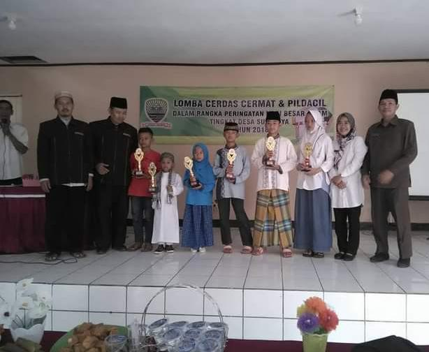
Mengikuti Lomba PILDACIL
Tingkat Desa
Mengikuti kegiatan Lomba PILDACIL dan meraih juara Pertama.
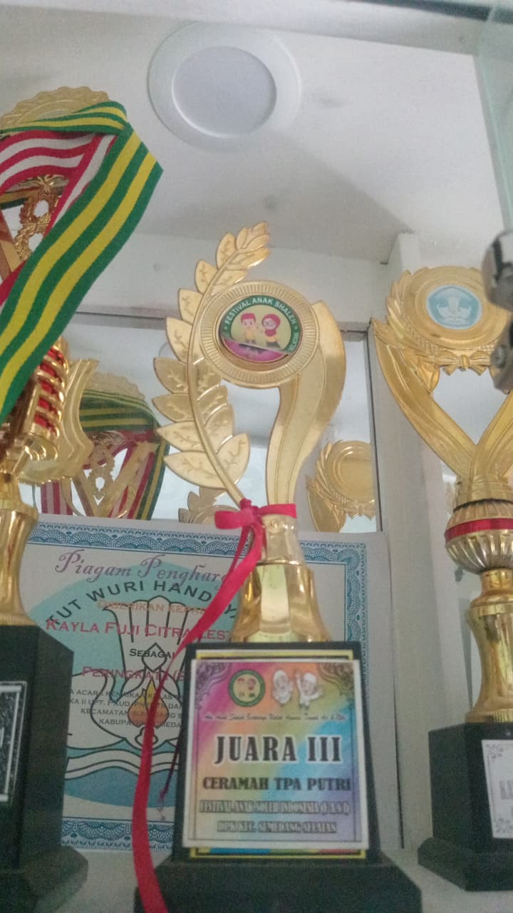
Mengikuti Lomba PILDACIL
Tingkat Kecamatan
Mengikuti Lomba PILDACIL dan meraih juara ke 3 tingkat Kecamatan.
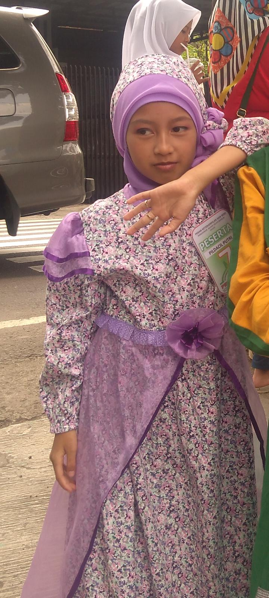
Mengikuti Lomba PILDACIL
Mengikuti Lomba PILDACIL dan meraih juara Harapan ke-2 tingkat kecamatan pada saat kelas 6 SD.
Tingkat Kecamatan

Mengikuti lomba menghafal Al-Qur'an
SD
Berhasil menghafal beberapa surat juz 30, yang di selenggarakan oleh Kepala Sekolah SD Margasuka 2.
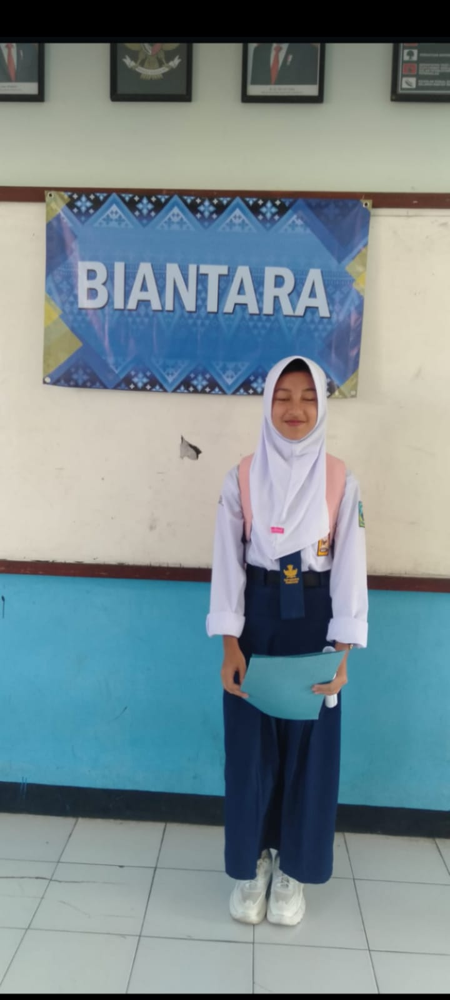
Mengikuti Lomba Biantara
SMP
Mengikuti Lomba Biantara di SMPN 3 Sumedang. Walaupun belum berhasil meraih juara, namun ini menjadi pengalaman berkesan bagi saya.

Mengikuti Lomba Cipta Puisi
SMP
Walau tidak meraih Juara, namun ini menjadi pengalaman yang cukup mengesankan.
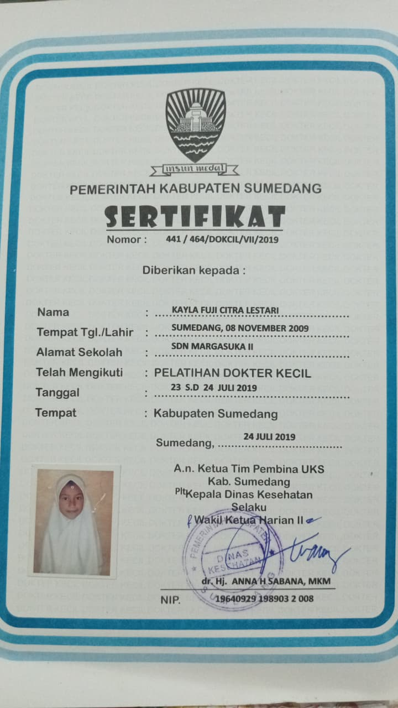
Mengikuti kegiatan Dokter Kecil
SD
Mengikuti kegiatan dokcil.
Work
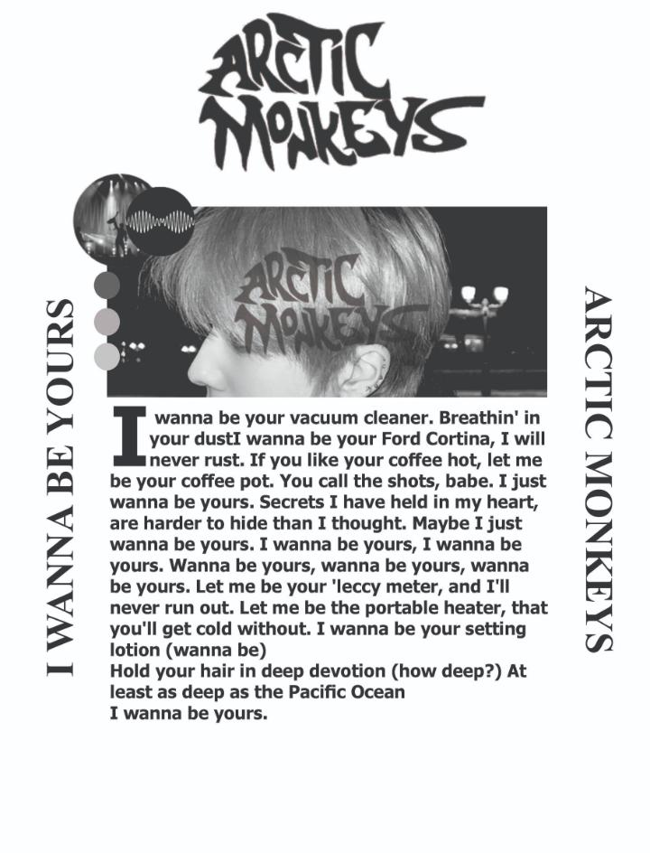
Desain Kaos
Corel Draw
Membuat rancangan desain baju/kaos kreatif menggunakan Corel Draw, mulai dari pembuatan vektor hingga pemilihan kombinasi warna yang siap cetak.
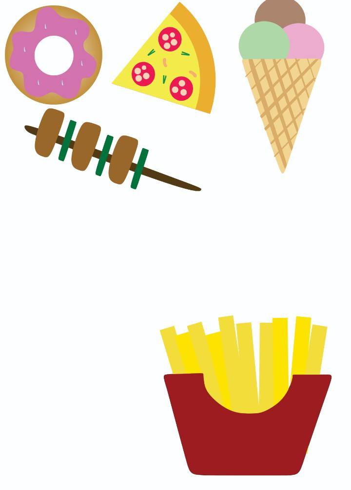
Membuat Gambar Junkfood
Corel Draw
Latihan mengasah kemampuan membuat aset grafis dengan menggambar ilustrasi makanan cepat saji (junk food) menggunakan tools dasar di Corel Draw.
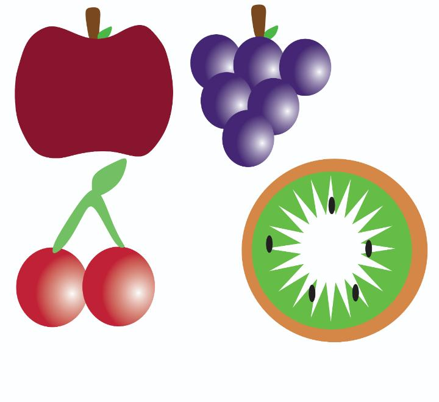
Membuat Gambar Buah
Corel Draw
Membuat objek ilustrasi buah-buahan berbasis vektor untuk mempelajari teknik pencahayaan, pewarnaan gradasi, dan pembentukan objek di Corel Draw.
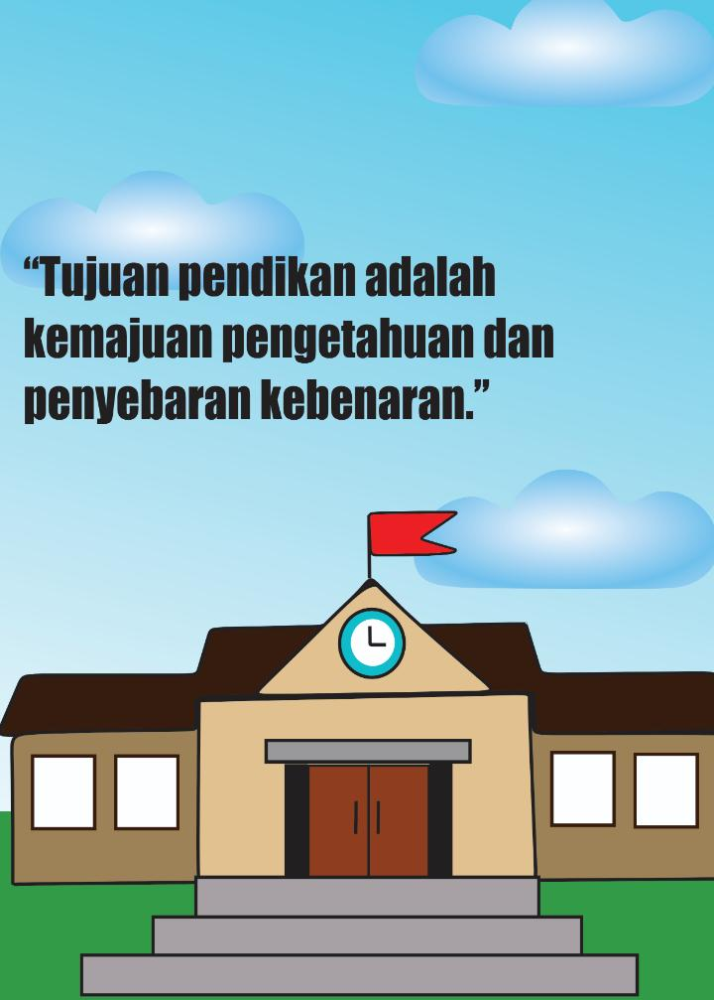
Membuat Poster Sekolah
Corel Draw
Merancang poster informatif untuk keperluan sekolah dengan menyusun tata letak teks, gambar, dan elemen grafis agar menarik pembaca.
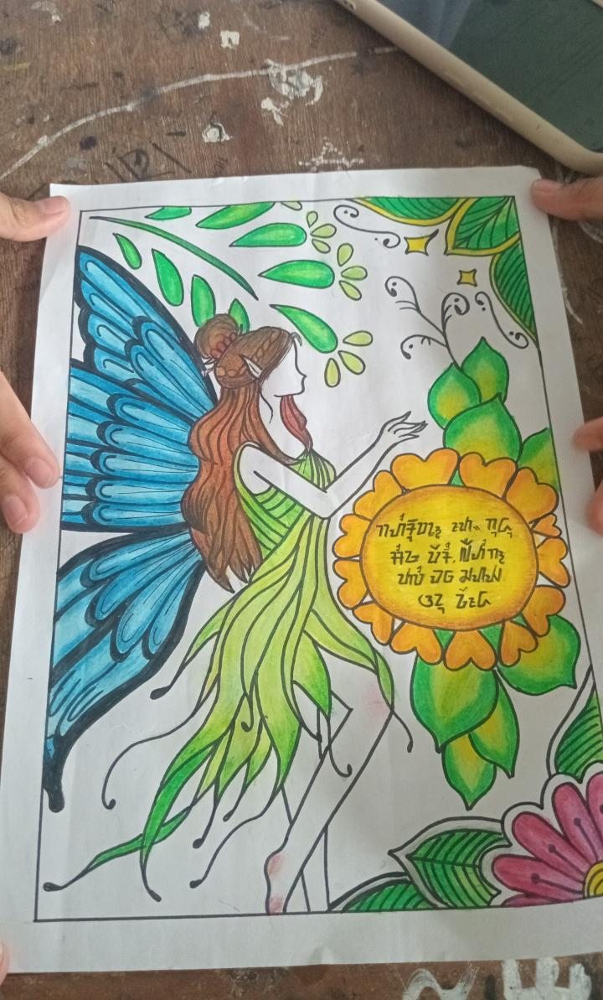
Membuat Poster Bahasa Sunda
Membuat karya poster kebudayaan berbahasa Sunda secara manual (menggambar dan mewarnai langsung di kertas) untuk menyampaikan pesan seni dan budaya lokal.
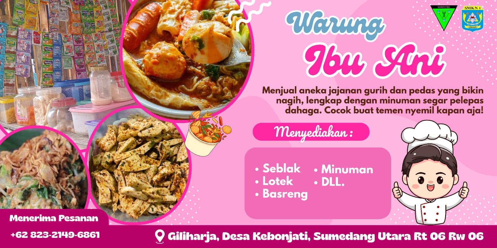
Membuat Desain Spanduk
Membuat Desain Spanduk Wirausaha menggunakan Canva.
Membuat Video Text Procedure
Membuat Video Text Procedure tentang bagaimana cara membuat Jedag Jedug di Capcut.